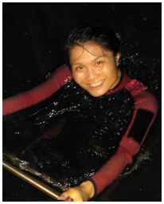

|  | Ywee Chieh TAYPostdoctoral Research Fellow (Alumna)PI: Rudolf Meier (Evolutionary Biology Lab) Co-PIs: Danwei Huang & Chou Loke Ming (Reef Ecology Lab) Curriculum vitae |
Research Interests
I am interested in various aspects of molecular ecology, particularly in population genetics, and the discovery, conservation, and assessment of biodiversity. In recent years, I have been exploring these aspects with the power of high-throughput DNA sequencing. I also have a keen interest in developing molecular methods to enhance research in these areas.
Biodiversity discovery, conservation & assessment
In order to manage biodiversity, it is necessary to first know the existing flora and fauna. DNA barcoding is an efficient method to make a first assessment of species diversity and composition. I have contributed to building various DNA databases documenting the diverse tropical flora and fauna in Singapore. Such databases are crucial to biomonitoring methods of the future, one of which is the metabarcoding of environmental DNA (eDNA). I want to use eDNA as a non-invasive tool to assess biodiversity, and monitor specific species of interest, such as invasive species.
Population genetics/genomics
Landscapes worldwide have changed drastically due to human development. My research focus takes a comparative approach to assess anthropogenic impacts on the fine-scale population genetics of different taxon groups across different habitats and life histories. Although my research thus far has mainly been localised to Singapore, the patterns observed across habitats and life histories will contribute towards a more comprehensive understanding of fine-scale marine population dynamics.
Academic History
PhD, National University of Singapore (2012)
Dissertation: Connectivity of Coral Populations within the Singapore Strait
Received the World Future Foundation PhD Prize in Environmental Sustainability Research
BSc (First Class Hons), National University of Singapore (2006)